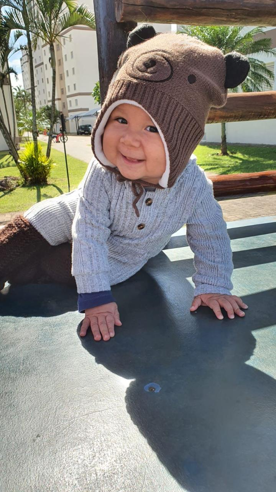
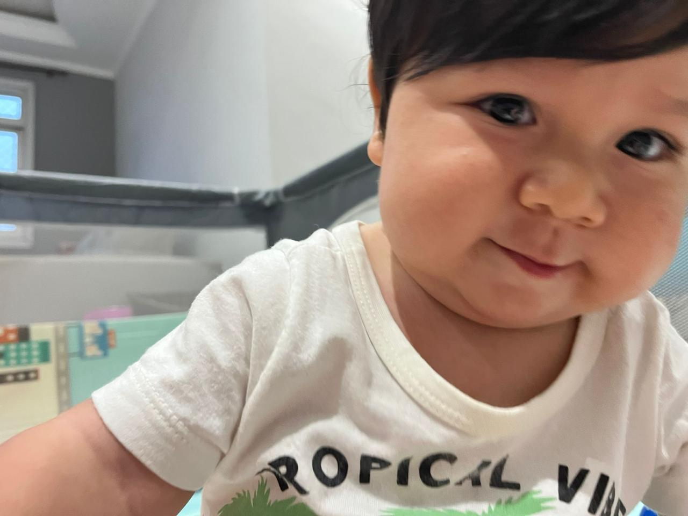
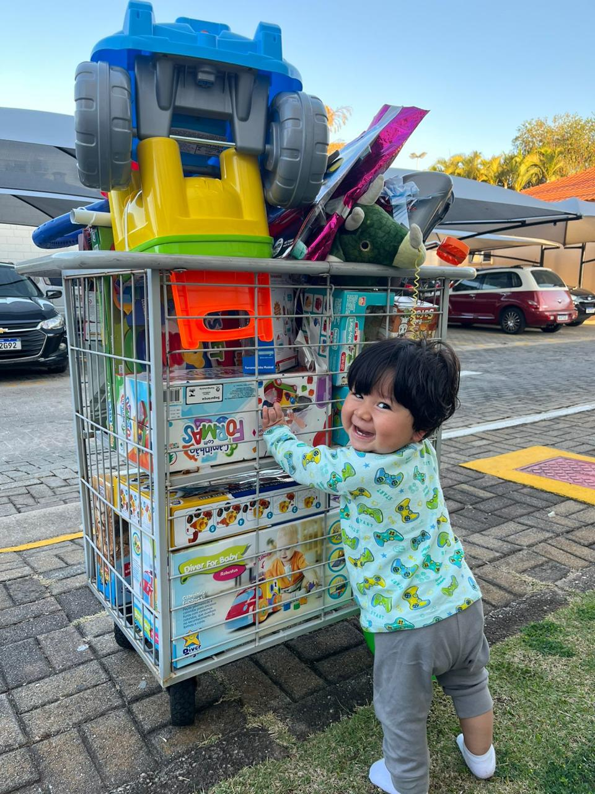

Novas experiências 🌱
Cada novidade é uma oportunidade de conhecer um pouquinho mais do mundo.
Um mundo de descobertas e carinho
Cada dia traz uma novidade, uma brincadeira e uma nova aventura.
A infância é feita de curiosidade, descobertas e experiências especiais. Cada pequeno detalhe pode se transformar em uma grande lembrança.
🧸Cada fotografia guarda um pedacinho dessa linda fase de descobertas.

Cada novidade é uma oportunidade de conhecer um pouquinho mais do mundo.

Um olhar curioso pode transformar os pequenos instantes em grandes aventuras.

Cada fase traz algo novo e merece ser guardada com carinho.
Que cada novo dia seja uma oportunidade de brincar, aprender, explorar e sorrir.